Projekt: Stopfpilze aus dem 3D-Drucker
Wer schon einmal Löcher in Socken gestopft hat, kennt als Hilfsmittel dafür bestimmt Stopfpilze oder Stopfeier.
Auch im Repair Café in Bad Zwischenahn werden die genutzt. Besonders gerne kommt dort eine große Stopfscheibe zum Einsatz; quasi ein sehr großer und flacher Stopfpilz mit einer Rille, um den Stoff mit einem Gummiband auf der Scheibe zu fixieren, sodass man ihn nicht selbst festhalten muss und er sich nicht verzieht.
Solche Stopfscheiben aus Holz kann man in einer schönen gedrechselten Variante auch online kaufen – meist allerdings zu Preisen von über 30 Euro pro Stück und nur in einer sehr begrenzten Auswahl an Größen.
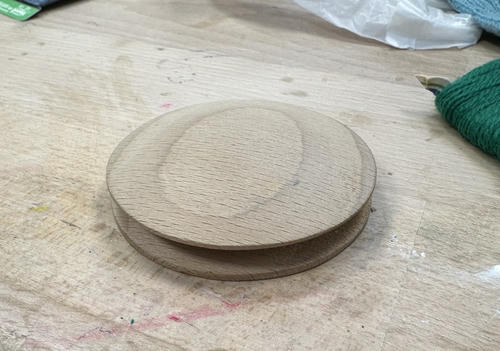
Das muss doch besser gehen, haben wir uns gedacht. Mit einem 3D-Drucker.
Erste Version: Einfaches Modell mit einer Rotations-Extrusion
Es gibt verschiedene Möglichkeiten, um dreidimensionale Objekte am Computer zu entwerfen. Eine sehr einfache Methode ist es, ein bestehendes zweidimensionales Bild zu nehmen und es gerade hochzuziehen, bis die gewünschte Höhe erreicht wird (das nennt man “Extrusion”). Nur ein ganz bisschen komplizierter ist die “Rotations-Extrusion”. Dort wird das Bild 360 Grad um eine angegebene Achse gedreht. Aus einem gedrehten Kreis kann dadurch (je nachdem, wo sich die Achse befindet) eine Kugel oder ein Donut entstehen.
Für die erste Version des Modells haben wir daher einen Querschnitt als 2D-Pfad in Inkscape entworfen und diesen mithilfe von OpenSCAD einmal um die Mitte gedreht.
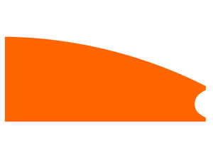
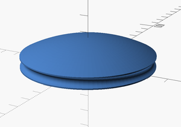
Dieses Objekt kann dann direkt an eine Software für 3D-Druck (genannt Slicer) übergeben werden, die das Modell in einzelne Schichten zerlegt und dann für jede Schicht Bewegungsmuster für den 3D-Drucker erzeugt.
Im Space steht aktuell ein Bambu Lab A1 mini, der die ersten Prototypen gedruckt hat. Basierend auf der Stopfscheibe aus Holz haben wir SVG-Dateien für Varianten in 8 cm, 10 cm und 12 cm getestet.
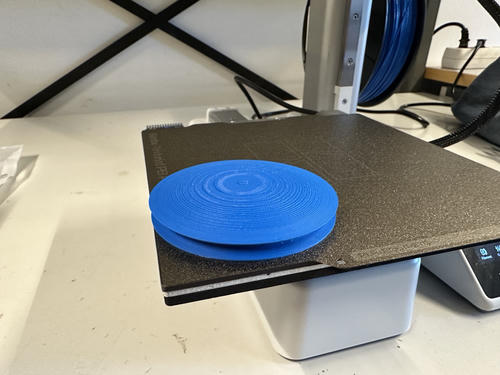
Das Feedback für die ersten Versionen aus dem Repair Café war schon sehr positiv. Besonders die ganz großen Stopfscheiben haben sich als praktisch für bestimmte Anwendungen herausgestellt. In den folgenden Tagen haben wir mit leicht anderen Größen und Formen für den “Schirm” unserer Stopfpilze experimentiert.
Wie von ganz allein kam dann auch die Idee auf, einen speziellen “Pilz” nur für Socken zu entwerfen, der etwa die Form einer Fußspitze hat. Auch hier haben wir eine Rotations-Extrusion verwendet, allerdings in einem zweiten Schritt den runden Pilz noch mit einer Skalierung “flachgedrückt”.
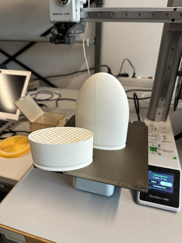
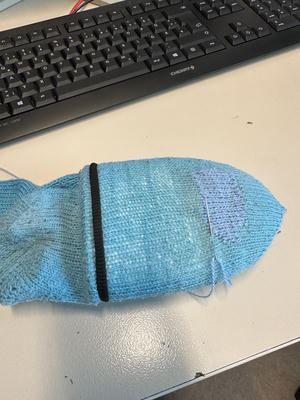
Etwas komplizierter wurde es dann, als wir eine weitere Idee umsetzen wollten – eine hohle Version des Stopfpilzes, die von unten beleuchtet werden kann. Das macht Reparaturen an dunklen Stoffen einfacher und macht dünne Stellen in einem Stoff sichtbar. Hier haben wir das Modell in zwei Teile zerlegt, um den Druck einfacher zu machen. Das Resultat spricht für sich und wird aktuell sehr gern zum Reparieren eingesetzt.
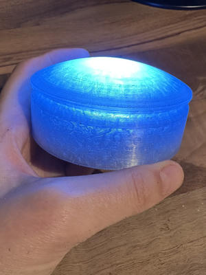
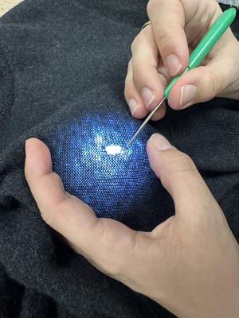
Mit diesen ersten Modellen in unterschiedlichen Größen und Formen ausgestattet war dann erstmal Schluss. Bestimmt lässt sich da kaum noch was verbessern, oder?
Exkursion: Upload auf printables.com
Damit wir im Space und im Repair Café nicht die Einzigen sind, die in Zukunft etwas von unseren neuen Stopfpilzen haben, haben wir sie natürlich unter einer offenen Lizenz online gestellt.
Als Plattform dafür haben wir uns für printables.com entschieden, eine große Website für 3D-Modelle auf der es bereits über eine Million andere Modelle zu finden gibt, die man kostenlos herunterladen kann. (Dort gab es vorher sogar schon andere Versionen von Stopfpilzen – allerdings keine flachen und großen Stopfscheiben wie wir sie entworfen haben und auch keine beleuchteten Varianten.)
Falls ihr die ersten Modelle drucken möchtet, könnt ihr also das 3D-Modell dafür auf printables.com herunterladen und entweder bei uns im Space, auf einem eigenen Drucker oder von einem Online-Service drucken lassen. Auch die SVGs und OpenSCAD-Dateien könnt ihr auf printables herunterladen.
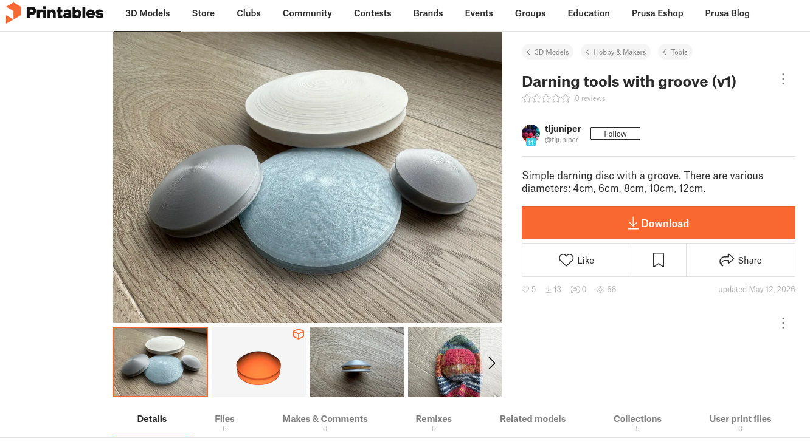
Zweite Version: Vollständig anpassbar mit OpenSCAD und BOSL2
Wie schon angeteasert, war dann mit der Version 1 doch noch nicht jeder Anwendungsfall gelöst.
Wir hatten den tollen beleuchteten Stopfpilz, allerdings nur in einer Größe. Bekommen wir auch andere Größen beleuchtet hin? Könnte man den Socken-Stopfpilz beleuchten? Gerade wenn Socken schon dünne Stellen haben, wäre das doch schick. Was ist mit den klassischen Modellen, die einen Stiel haben, in dem man die Stopfnadeln aufbewahren kann? Und was mit super engen Stellen, zum Beispiel in Handschuhen? Können wir auch Stopfeier bauen?
Gerade die parametrisierbaren Modelle, bei denen man also einzelne Parameter wie die Höhe oder Breite eines Objektes einstellen kann, sind ein Anwendungsfeld, in dem OpenSCAD glänzt. Wir sind also nochmal einen Schritt zurückgegangen und haben ein konfigurierbares Modell des Stopfpilzes entworfen, bei dem man die Größe, Form und Ausführung des Pilzes einstellen kann. Für jeden Entwurf gibt es zusätzlich auch eine Variante mit Stiel (der mit einem Gewinde eingeschraubt wird) und eine hohle Variante, die beleuchtet werden kann. Weil man die Form des Schirms recht frei einstellen kann, sind mit dem selben Generator auch Stopfeier möglich.
Wenn ihr einen der neuen Stopfpilze durcken wollt, euch die Details zum neuen Modell interessieren oder ihr noch eine ganz neue Form des Stopfpilzes bauen wollt, schaut gerne direkt ins Modell rein.
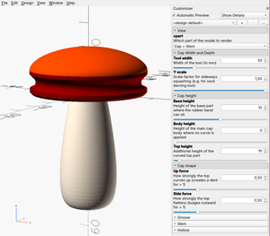
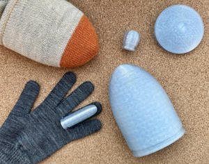
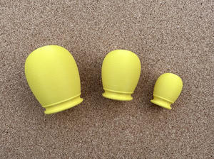
Relevante Links
- Verbesserte Stopfpilz-Sammlung - printables
- Stopfscheiben v1 - printables
- Sockenstopfpilz v1 - printables
- 2D-Design-Software: Inkscape
- 3D-Design-Software: OpenSCAD
- Repair Café Bad Zwischenahn
Interesse geweckt? Kommt im Space vorbei!
Falls ihr jetzt ganz dringend auch einen 3D-gedruckten Stopfpilz braucht, oder ein anderes Projekt drucken möchtet, schaut gerne im Space vorbei. Vorkenntnisse braucht ihr dazu nicht – es sind oft Leute da, die in die Drucker eingewiesen sind und euch gerne helfen, einen Druck zu starten.
Falls Kinder oder Jugendliche 3D-Druck ausprobieren möchten, bieten sich dafür auch ganz besonders unsere CoderDojos und Jugend hackt Labs an. Im Terminkalender könnt ihr sehen, wann die nächsten Aktionen stattfinden.
Und schließlich freut sich auch das Repair Café in Bad Zwischenahn immer über Leute, die dort reparieren, helfen oder einfach einen Kuchen essen möchten. Repariert wird dort jeden ersten Samstag im Monat.
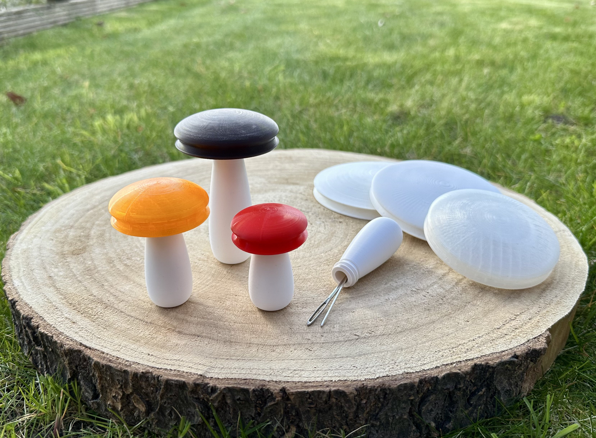